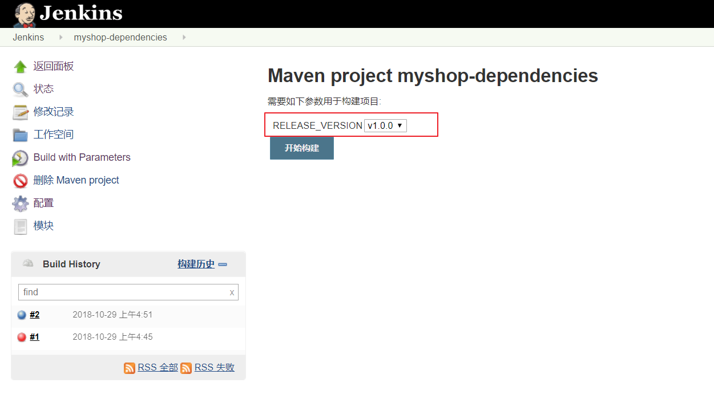

概述
Jenkins 的持续交付流程与 GitLab Runner 的持续集成差不多，但 GitLab Runner 已经默认是配置好了 Git，所以 Jenkins 需要额外配置多一个 GitLab 的 SSH 登录。按照之前 GitLab Runner 的持续集成流程，Jenkins 的持续交付流程大致如下：
- 拉取代码
- 打包构建
- 上传镜像
- 运行容器
- 维护清理
环境
请按照
这篇文章的Docker安装Jenkins，这里会安装插件超快。Jenkins需要的插件：
- 默认勾选的插件
- Maven Integration
- Publish Over SSH
- GitLab
- GitHub
- Dashboard View
- Localization: Chinese (Simplified)
- Git
插件安装过慢解决
建议使用这篇文章的Docker方式
Jenkins免密登录GitLab
持续交付，即将代码一个阶段性的成果/里程碑发布到测试/类生产环境下。他还需要做到如果最新里程碑式的代码构建错误，需要秒级回滚到上一个里程碑没错误的版本。
我们通过ssh来拉取代码需要免密登录GitLab！
jenkins服务器
- 交互式进入 Jenkins 容器
1 | docker exec -it jenkins /bin/bash |
- 生成 SSH KEY
1 | ssh-keygen -t rsa -C "your_email@example.com" |
- 查看公钥
1 | cat ~/.ssh/id_rsa.pub |
- 添加到GitLab
- 手动克隆一次项目，该步骤的主要作用是为了生成和服务器的验证信息
- 查看刚才生成的文件
配置远程登录生产环境
通过插件Publish over SSH 通过用户名密码登录远程测试、类生产环境
-
系统管理->系统设置->Publish over SSH
其中 Remote Directory 是指 Jenkins 可以在目标服务器操作的目录
- 保存
持续交付项目
为项目创建标签
在 GitLab 中为项目创建标签
创建 Maven Project
在 Jenkins 中创建一个基于 Maven 的任务
第一次构建
**构建项目 **
查看构建日志

配置正式构建
**增加参数化构建过程 **
这里使用了 Groovy 脚本来查询最近的 tags 版本，代码如下：
1 | def ver_keys = [ 'bash', '-c', 'cd /var/jenkins_home/workspace/hello-gitlab;git pull>/dev/null; git remote prune origin >/dev/null; git tag -l|sort -r |head -10 ' ] |
**关闭源码管理 **

**增加构建步骤 **
Execute Shell（本地执行 Shell 脚本）
Send files or execute commands over SSH（发送文件或执行远程命令)
- Source files：需要传输到远程目标服务器的文件
**/*.jar,docker/** - emove prefix：删除前缀。比如传输
**/*.jar，我们打包的.jar文件是在target目录下的，传输时会一并创建target目录，如果不希望创建target目录，则可以使用该参数屏蔽掉这些前缀文件夹。 - Remote directory：在远程目标服务器创建操作目录
hello-gitalb - Exec command：在远程目标服务器执行控制台命令 ·
- Source files：需要传输到远程目标服务器的文件
1 | echo $RELEASE_VERSION |
1 | cd /usr/local/workspace/hello-gitlab |
**使用参数化构建项目 **

